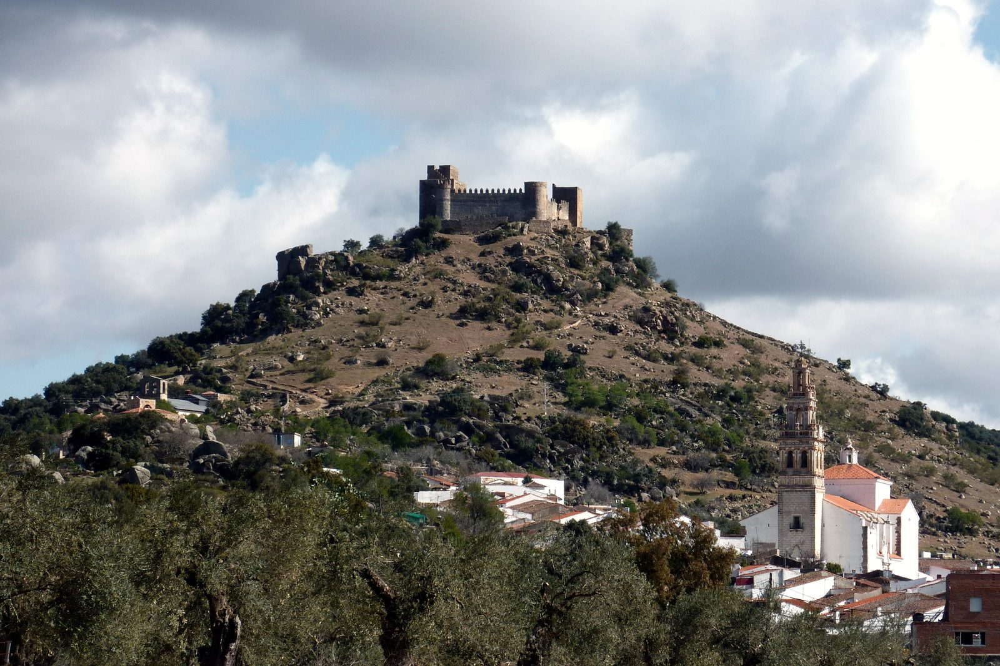
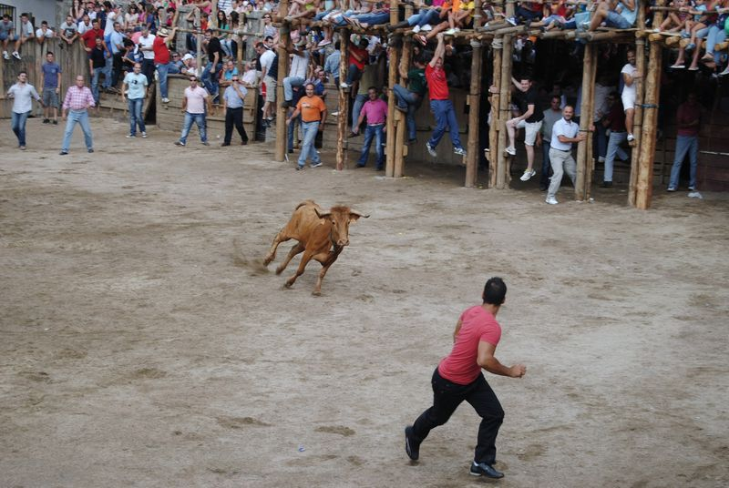

Ayuntamiento de
Segura de León
Hoy en Segura sábado 3 de octubre
Ayuntamiento
Cerrado ahora · abre el lunes a las 8:00
Lunes a viernes, de 8:00 a 14:00 Ejemplo
Lo próximo en la agenda
- San Francisco: convivencia con cantina y colchonetasHoy · Llano del Convento
- San Francisco: función religiosaMañana, 12:30 · Llano del Convento
- XI Noche en Blanco, «De puertas para adentro»Sábado 10 de octubre, 19:30 · Castillo, Plaza de España y otros espacios
Último aviso
Corte de agua programado en varias calles, de 9:00 a 13:00 EjemploHoy
Sede electrónica
¿Qué necesita hacer?
Todos los trámites- Empadronarme Alta o renovación en el padrón Se abre la sede electrónica
- Volante de empadronamiento Certificado o volante Se abre la sede electrónica
- Licencia de obra Licencia o autorización urbanística Se abre la sede electrónica
- Avisar de una incidencia Una farola, un bache, un contenedor Se abre la sede electrónica
Vivir aquíPadrón, certificados, boda civil
Casa, obras y campoLicencias, agua, quemas
- Obra pequeña: declaración responsable, se abre la sede electrónica
- Obra mayor: licencia urbanística, se abre la sede electrónica
- Licencia de ocupación, se abre la sede electrónica
- Dar de alta el agua, se abre la sede electrónica
- Cambiar el titular del agua, se abre la sede electrónica
- Permiso para quemar rastrojos, se abre la sede electrónica
Pagos e impuestosRecibos, aplazamientos, bonificaciones
Familia, mayores y ocioAyuda a domicilio, servicios sociales, cursos
Opinar y avisarQuejas, incidencias, información pública
Trabajo y empleoProcesos de selección del Ayuntamiento
Tablón de avisos
Todos los avisos y anunciosLos 6 más recientes de 9.
- Corte de agua programado en varias calles, de 9:00 a 13:00Ejemplo
- El Punto Limpio pasa al horario de invierno
- Nuevo horario de la Oficina de Turismo y del castillo
- Aprobado definitivamente el expediente 14/2026 de crédito extraordinario y suplemento de crédito, se abre la sede electrónica
- Puerta a Puerta: el cubo se saca de 20:00 a 22:00
- Día de la Mancomunidad: apúntese al autobús hasta el 7 de octubre
- Tasa de basura: se devuelve de oficio lo cobrado de más
- La sala de cardio y musculación reabre el lunes 5 de octubre
- Bases de las ayudas para suministros mínimos vitales de 2026, se abre la sede electrónica
Los anuncios marcados «Tablón oficial» vienen del tablón de anuncios de la sede electrónica, con el título explicado en lenguaje claro.
Lo que viene y lo que pasó
Agenda
XI Noche en Blanco, «De puertas para adentro»
Castillo, Plaza de España y otros espacios
Agenda
San Francisco: función religiosa
Llano del Convento
Agenda
San Francisco: convivencia con cantina y colchonetas
Llano del Convento
- Hoy, sábado 3 de octubre
Noticia

El Pleno aprueba la Cuenta General de 2025
También el convenio de los servicios sociales de base para 2027. La guardería abrió con 23 niños.
Noticia
Empieza la temporada 2026/27 de la Escuela Municipal de Deportes
Gimnasio, spinning, bodypump, kárate, escalada, fútbol y tenis, desde el 5 de octubre.
Noticia

Gracias por unas Capeas emocionantes
El Ayuntamiento da las gracias a los ganaderos y a todos los que hicieron posibles las fiestas.
¿Quién se ocupa de qué?
El Ayuntamiento-
Impuestos, recibos y Policía Local
Manuel Fariñas AguilarConcejal de Hacienda, Policía y Personal
-
Turismo, castillo y museo
Pilar Bellido GarduñoConcejala de Turismo y Transformación Digital
-
Cultura, asociaciones y San Roque
Rafael Vázquez FalcónConcejal de Cultura y Colectivos Locales
-
Salud, servicios sociales, caminos y campo
Isabel Montero CruzadaConcejala de Sanidad y Bienestar Social
El año en Segura
Conocer el puebloEnero
- Cabalgata de Reyes5 de enero
Febrero
- Candelaria y San Blas2 y 3 de febrero
- CarnavalAntes de la Cuaresma
Marzo
- Día de la TortillaAntes de Semana Santa
Abril
- Semana SantaCon el Amarrao, la madrugá y el Pregón de Pilatos
- Virgen de los RemediosEl lunes de la semana siguiente a Pascua
- Día del CaminoÚltimo sábado de abril
Mayo
- Cruces de MayoNoche del 2 al 3 de mayo
- San IsidroEl fin de semana siguiente al 15 de mayo, con casetas en el Llano del Convento
Junio
- Feria Gastronómica «Segura, para comérsela»En junio
Julio
Sin fiestas señaladas
Agosto
- San Roque, patrón, y la Asunción Fiesta mayor15 y 16 de agosto, con el Ramo y los merengues
Septiembre
- Día de la TrancaEl sábado antes de las Capeas
- Las Capeas, en honor al Cristo de la Reja Fiesta mayorMediados de septiembre; el 14, día del Cristo
Octubre Este mes
- San FranciscoEn torno al 4 de octubre, en el Llano del Convento
- Noche en BlancoUn sábado de octubre
Noviembre
Sin fiestas señaladas
Diciembre
- Mercado NavideñoEn diciembre
- Día de las Migas31 de diciembre